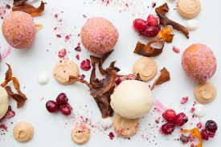

Balinese Desserts

Bubur Sumsum
Sweet and salty coconut rice porridge,It's usually served cool with palm sugar syrup and occasionally sweet potato dumplings.

Batun Bedil
Sticky rice cake served with a brown sugar sauce.
Klepon
Glutinous rice flour mixed with normal rice flour,and has the palm sugar filling. The outer layer is covered with shredded coconut.

Bubur Injin
Glutinous black rice,coconut milk sauce topped with fresh fruit like strawberries, pomegranate or jack fruit.
International Desserts
Tiramisu
This classic Italian dessert is made up of sponge fingers soaked in coffee, traditionally layered between a coffee-flavoured mascarpone cheese whipped with eggs and sugar, and then topped with cocoa.

Gulab Jamun
Indian deep-fried doughnut in bitesize form, soaked in a sweet syrup.
S’mores
USA S’mores :Two biscuits sandwiched together with melted chocolate and marshmallows.
Churros
choux-like pastry, piped through a star-shaped nozzle into hot oil where they’re fried until golden brown and then sprinkled with sugar.
Lamingtons
Vanilla sponge covered in chocolate and desiccated coconut, but they can also contain a layer of jam sandwiching two lamington halves.

Malva Pudding
from South Africa, and is a gooey sponge cake made with apricot jam and served warm with a creamy sauce or custard.
Baklava
Middle Eastern Baklava is made from layers of paper-thin filo pastry, butter, chopped nuts and a sweet syrup fragranced with rose or orange blossom water. It’s normally made in big tins, baked and then drizzled with even more syrup before cutting into smaller pieces.

Pasteis de Nata
Crispy and flaky pastry shell, filled to the brim with a sweet, creamy custard centre.
All About Desserts!

There is no better way to bring people together than with desserts.
With Passion For Real, Good Food
Dessert can apply to many confections, such as biscuits, cakes, cookies, custards, gelatins, ice creams, pastries, pies, puddings, sweet soups, tarts and fruit salad. Fruit is also commonly found in dessert courses because of its naturally occurring sweetness.